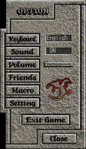

|  |
Client Configuration - From here, you can change several options. Keyboard - For the masochists playing DA, you can change to a Dvorak key mapping. In the future, this will allow international settings for DA players outside the US. Sound - This option will allow you to turn the sound off. Volume - By adjusting the slider next to the volume option, you can control the sound level. Friends - This will open up a window with 20 slots. You can click on one of the slots and type in a name. When you view the "who" list, your friend's names will appear in green. This is a good way to stay in touch with people; by bringing up the who list, you can easily see which of your friends is currently online. Macros - This will allow you to define common sayings that you use often, such as "Die scum!" and "Hello, Aisling". Okay, so maybe you wouldn't say that, but you get the picture. Macros are discussed in a later section of the Guide. Settings - Here you can change a variety of settings related to Dark Ages, such as if you want to see magic animations; the speed of your walking, and various options. Exit Game - Use this button to return to the main Dark Ages logon screen. |
Return to the Interface Guide